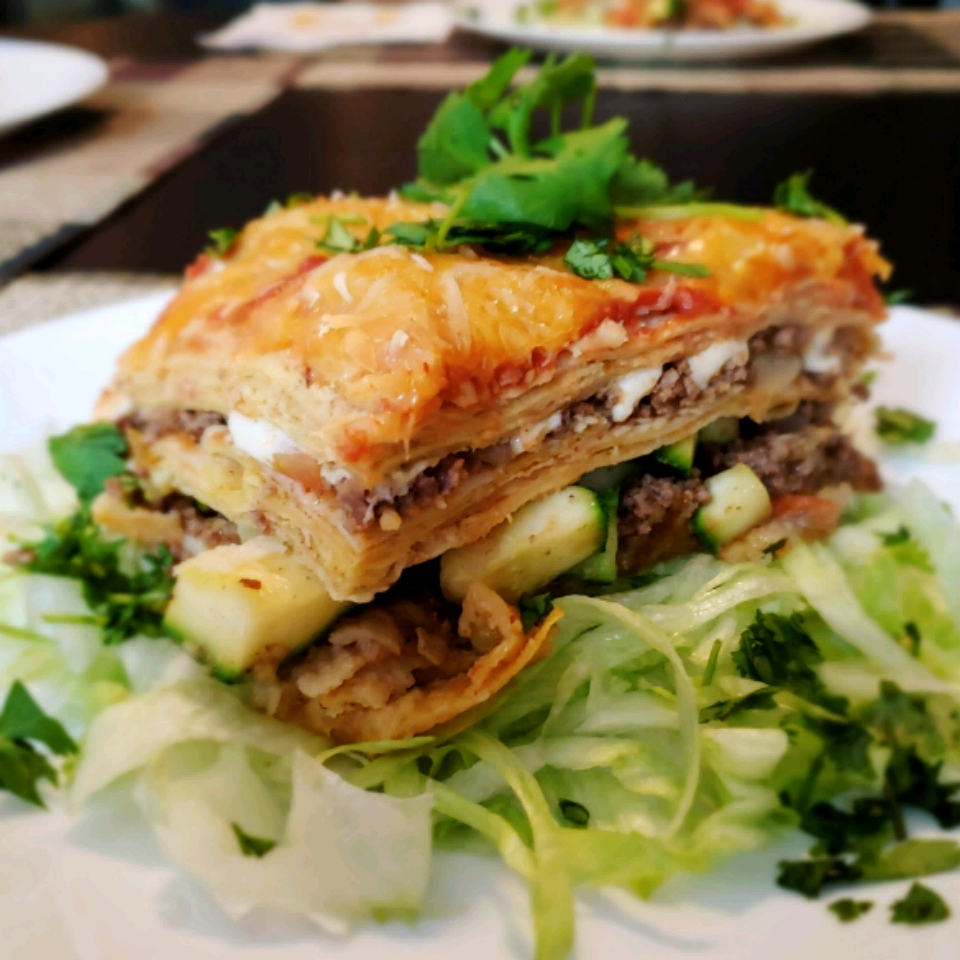

Mexican Lagsana

Description
My whole family loves this beefy lasagna flavored with taco seasoning. Even my picky five-year-old will eat it. Serve with shredded lettuce, fresh sliced tomatoes, olives and sour cream.
Ingredients
- 1 pound lean ground beef
- 1 (1 ounce) package taco seasoning mix
- 1 (14 ounce) can peeled and diced tomatoes with juice
- 10 (6 inch) corn tortillas
- 1 cup prepared salsa
- ½ cup shredded Colby cheese
Steps
- Preheat oven to 350 degrees F (175 degrees C).
- In a large skillet over medium-high heat, brown the ground beef, and stir in the taco seasoning and tomatoes. Line a 9x13-inch baking dish with half the tortillas. Spoon the beef mixture into the dish, then top with the remaining tortillas. Spread salsa over the tortillas and sprinkle with the cheese.
- Bake at 350 degrees F (175 degrees C) for 20 to 30 minutes, or until cheese is melted and bubbly.